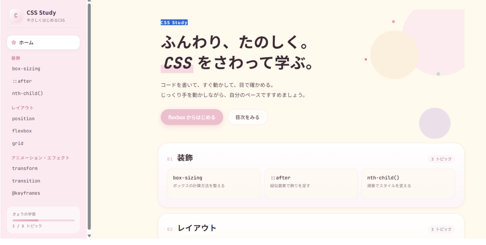
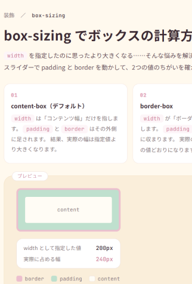
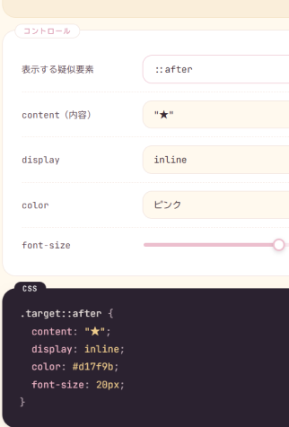
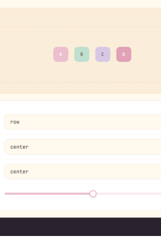
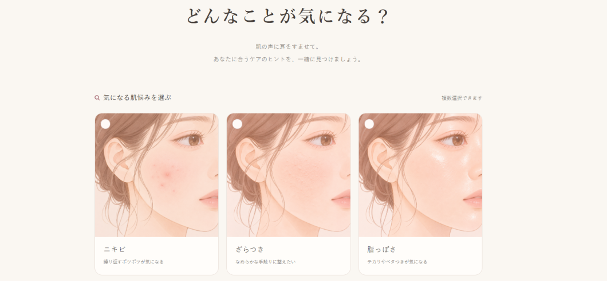
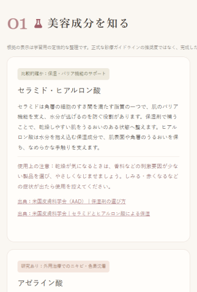
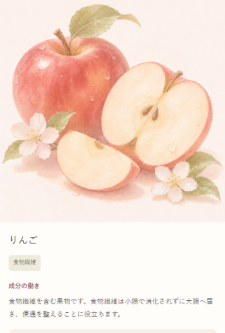
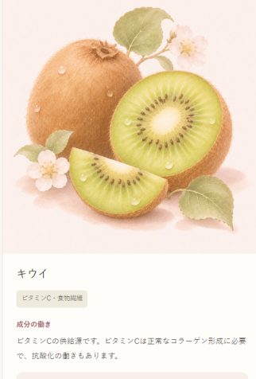

AI APP
AIツールを活用し、Webアプリを制作しました。企画や画面構成、動作の確認・修正を行いながら、コード生成にはAIを活用しています。
使用ツール
ChatGPT （Codex） / Claude
01CSS Study




※イメージ画像
制作期間：1日
アプリについて
CSSのプロパティについて学習できるアプリです。ただプロパティの説明があるだけではなく、数値やスライダーを動かすとそどのような動きをするか視覚的に学習できます。
目的
CSSを勉強していて、文字の説明だけでは理解しづらいプロパティも視覚的に確認できれば、理解しやすいと思い作成しました。
使用技術・工夫
HTML / CSS / JavaScript、Claude AIとの対話を通じたプロトタイピング。自分が「欲しい機能」を言語化してAIと対話しながら形にするプロセスを経験しました
02hada note




※イメージ画像
制作期間：２日
アプリについて
肌悩みを選択すると、その悩みに関連する美容成分や食べ物、栄養素の情報を表示するWebアプリです。
目的
肌悩みがあるときに、どのような成分や食べ物を取り入れる選択肢があるのかを、イラスト付きでわかりやすく確認できるアプリを制作することを目的としました。
使用技術・工夫
情報を掲載するだけでなく、codexに情報の出典元のURLを記載してもらい、内容の信頼性を高めるよう工夫しました。
また、イラストは全体をやわらかい水彩調で統一し、色味や線のタッチをそろえることで、アプリ全体のトンマナに一貫性を持たせました。